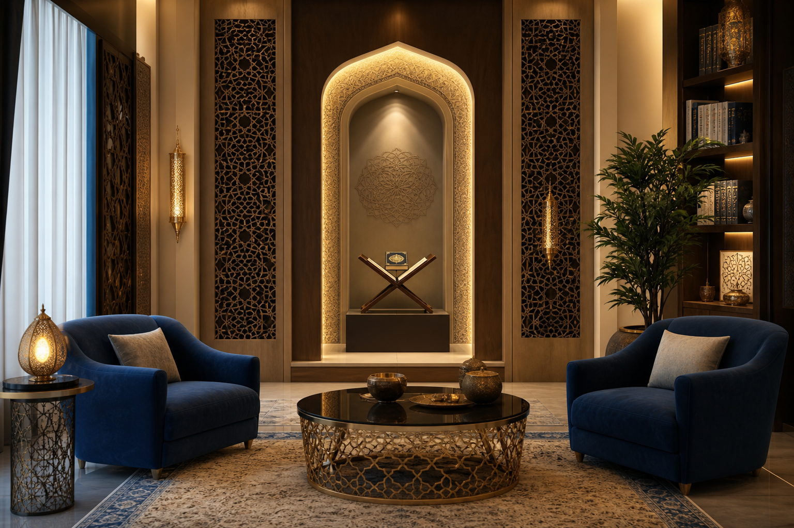

Konsultasi Privasi
Penilaian awal yang sensitif dan tersusun, sesuai individu atau keluarga.
Kami bantu anda dan keluarga melalui sesi rukyah syar'iyyah yang tersusun — bermula dengan konsultasi, rawatan, dan pelan amalan susulan yang jelas.

Penilaian awal yang sensitif dan tersusun, sesuai individu atau keluarga.
Bacaan ayat rukyah, doa ma'thur, dan bimbingan rohani secara tertib.
Panduan amalan harian supaya pemulihan lebih stabil dan berpanjangan.
Kebiasaannya 45-90 minit, bergantung kes.
Boleh untuk saringan awal dan bimbingan asas.
Kami fokus ikhtiar syar'ie dan susulan disiplin amalan; hasil berbeza ikut individu.
Hubungi kami untuk slot terdekat dan penerangan lanjut.
WhatsApp AdminWaktu operasi: 10:00 pagi – 10:00 malam